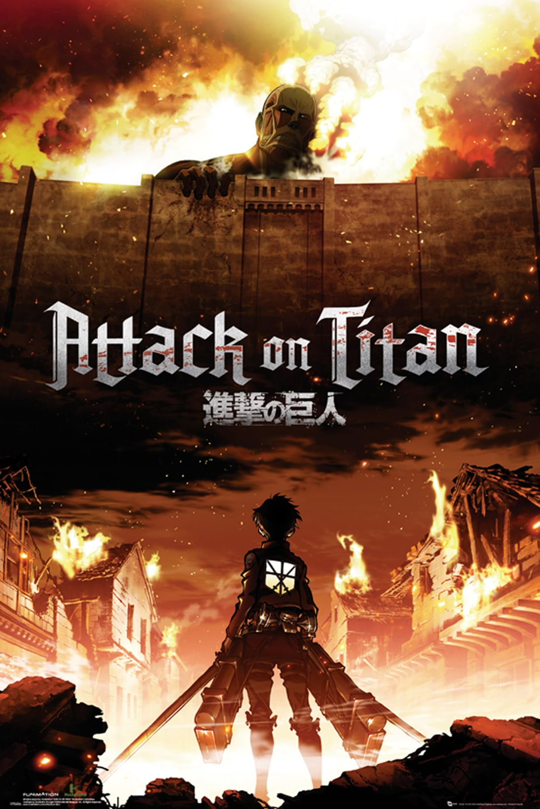

C'est quoi SNK ?
L'Attaque des Titans (進撃の巨人, Shingeki no Kyojin?, litt. « Le Géant assaillant », souvent abrégé SnK), aussi connu sous le titre anglais Attack on Titan, est un shōnen manga écrit et dessiné par Hajime Isayama. Il est prépublié entre septembre 2009 et avril 2021 dans le magazine Bessatsu Shōnen Magazine puis compilé en trente-quatre volumes reliés par l’éditeur Kōdansha. La version française est publiée en intégralité par Pika Édition dans la collection seinen entre juin 2013 et octobre 2021. L’histoire tourne autour du personnage d’Eren Jäger dans un monde où l’humanité vit entourée d’immenses murs pour se protéger de créatures gigantesques, les Titans. Le récit raconte le combat mené par l’humanité pour reconquérir son territoire, en éclaircissant les mystères liés à l’apparition des Titans, du monde extérieur et des évènements précédant la construction des murs.
Personnages
Île de Paradis - Bataillon d'Exploration
Île de Paradis - Garnison
Île de Paradis - Brigades Spéciales
Guerriers de Mahr
Candidats Guerriers de Mahr
Autres Personnages Importants

Informations techniques
Studio : WIT Studio
Chaîne d'origine : TV Tokyo
Diffusion : Avril 2013 – Septembre 2013
Épisodes : 25
Durée totale : 9h35
Adaptation : Chapitres 1 à 34
Op1 : Guren no Yumiya – Linked Horizon
Op2 : Jiyuu no Tsubasa – Linked Horizon
End1 : Utsukushiki Zankoku na Sekai – Yōko Hikasa
End2 : Great Escape – Cinema Staff
Openings
Opening 1 – Guren no Yumiya
Opening 2 – Jiyuu no Tsubasa
Endings
Ending 1 – Utsukushiki Zankoku na Sekai
Ending 2 – Great Escape
Arc : Chute de Shiganshina
Résumé intense ici...
Moments marquants
- Apparition du Titan Colossal
- Mort de...
Adaptation des chapitres 1 à 34
Épisodes – Saison 1
Saison 2 (2017) - 12 épisodes
Révélations sur les Titans et approfondissement des mystères.
- Épisode 26 : Titan bestial
- Épisode 27 : J'y suis pour quelque chose
- Épisode 28 : Vers le sud-ouest
- Épisode 29 : Soldat
- Épisode 30 : Historia
- Épisode 31 : Guerrier
- Épisode 32 : Fermeture
- Épisode 33 : Assaut
- Épisode 34 : Ouverture
- Épisode 35 : Enfants
- Épisode 36 : Charge
- Épisode 37 : Cri
Saison 3 (2018-2019) - 22 épisodes
Conspirations politiques et vérité sur le monde extérieur.
Partie 1 (Épisodes 38-49)
- Épisode 38 : Fumée
- Épisode 39 : Douleur
- Épisode 40 : Vieilles histoires
- Épisode 41 : Confiance
- Épisode 42 : Réponse
- Épisode 43 : Péché
- Épisode 44 : Vœu
- Épisode 45 : Amis
- Épisode 46 : Ennemi
- Épisode 47 : Porteur de chaînes
- Épisode 48 : Assaillant
- Épisode 49 : Nuit de la fin de la bataille
Partie 2 (Épisodes 50-59)
- Épisode 50 : Ville où tout a commencé
- Épisode 51 : Coup de tonnerre
- Épisode 52 : Descente
- Épisode 53 : Parfait jeu
- Épisode 54 : Héros
- Épisode 55 : Minuit
- Épisode 56 : Sous-sol
- Épisode 57 : Ce jour-là
- Épisode 58 : Assaillant de l'autre côté de la mer
- Épisode 59 : Vers l'autre côté du mur
Saison 4 (2020-2023) - 28 épisodes
Arc final et conclusion de l'histoire.
Partie 1 (Épisodes 60-75)
- Épisode 60 : De l'autre côté de la mer
- Épisode 61 : Coup d'envoi du spectacle nocturne
- Épisode 62 : Porte de l'espoir
- Épisode 63 : De la main à la main
- Épisode 64 : Déclaration de guerre
- Épisode 65 : Marteau de guerre
- Épisode 66 : Assaut
- Épisode 67 : Assassin
- Épisode 68 : Volontaires
- Épisode 69 : Brave volontaire
- Épisode 70 : Un bon thé
- Épisode 71 : Guides
- Épisode 72 : Enfants de la forêt
- Épisode 73 : Violence sauvage
- Épisode 74 : Seul salut
- Épisode 75 : Au-dessus et en dessous
Partie 2 (Épisodes 76-87)
- Épisode 76 : Condamnation
- Épisode 77 : Représailles
- Épisode 78 : Deux frères
- Épisode 79 : Souvenirs de l'avenir
- Épisode 80 : De toi, il y a 2000 ans
- Épisode 81 : Assaillant
- Épisode 82 : Crépuscule
- Épisode 83 : Orgueil
- Épisode 84 : Nuit de la fin
- Épisode 85 : Traître
- Épisode 86 : Rétrospective
- Épisode 87 : L'aube de l'humanité
Le Manga
Chapitre 1 à 139